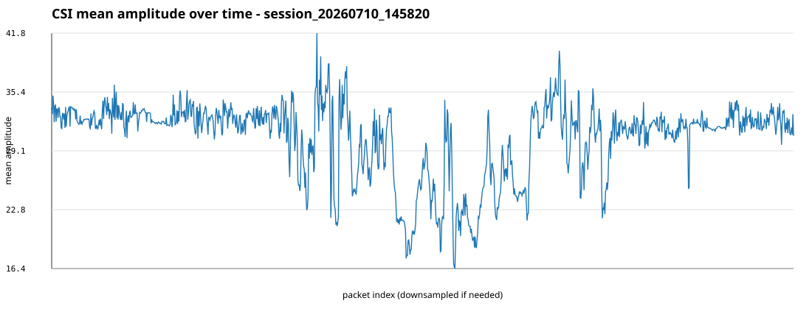
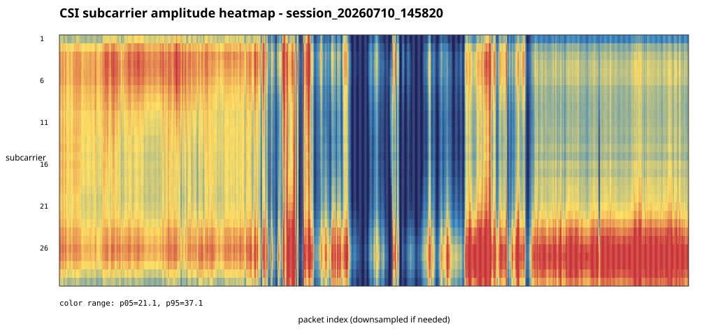
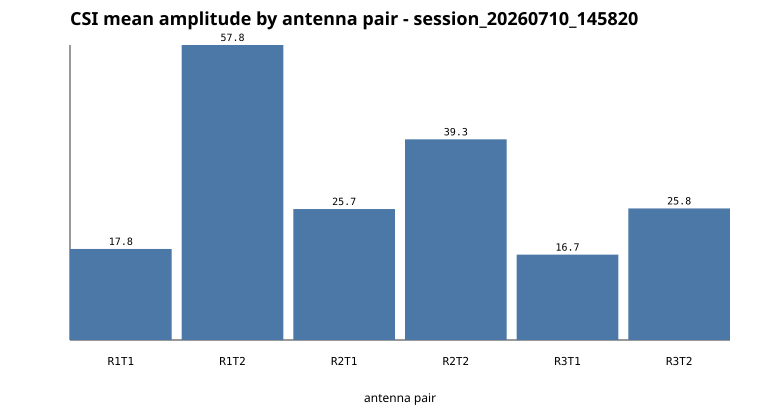

CSI file: data/raw/session_20260710_145820/csi.dat
{
"agc_values": {
"14": 72,
"15": 145,
"16": 1246,
"17": 600,
"18": 503,
"19": 125,
"20": 349,
"21": 377,
"22": 238,
"23": 273,
"24": 417,
"25": 38,
"26": 92,
"27": 36,
"28": 30,
"29": 9,
"30": 2,
"31": 3,
"32": 5,
"33": 5,
"34": 27,
"35": 36,
"36": 23,
"37": 19,
"38": 10,
"39": 9,
"40": 1
},
"amplitude": {
"max": 87.00574693662483,
"mean_of_packet_means": 30.398608741044782,
"mean_of_packet_stds": 18.37834978838115,
"min": 0.0
},
"antenna_dimensions": {
"3x1": 52,
"3x2": 4638
},
"file_bytes": 1843190,
"first_record": {
"Nrx": 3,
"Ntx": 2,
"agc": 20,
"bfee_count": 5554,
"code": 187,
"csi_len": 372,
"entry_size": 393,
"noise": -84,
"perm": [
1,
3,
2
],
"rate_hex": "0x210f",
"record_index": 0,
"rssi_a": 39,
"rssi_b": 35,
"rssi_c": 39,
"timestamp_low": 558774452
},
"last_record": {
"Nrx": 3,
"Ntx": 2,
"agc": 15,
"bfee_count": 10243,
"code": 187,
"csi_len": 372,
"entry_size": 393,
"noise": -85,
"perm": [
3,
2,
1
],
"rate_hex": "0x010d",
"record_index": 4689,
"rssi_a": 34,
"rssi_b": 40,
"rssi_c": 40,
"timestamp_low": 646536359
},
"noise_values": {
"-60": 8,
"-61": 6,
"-63": 11,
"-64": 21,
"-65": 6,
"-66": 9,
"-69": 11,
"-71": 4,
"-72": 8,
"-73": 10,
"-74": 29,
"-76": 22,
"-78": 17,
"-79": 13,
"-80": 29,
"-81": 32,
"-82": 72,
"-83": 184,
"-84": 445,
"-85": 1416,
"-86": 1159,
"-87": 459,
"-88": 264,
"-89": 161,
"-90": 255,
"-91": 21,
"-92": 8,
"-93": 10
},
"path": "data/raw/session_20260710_145820/csi.dat",
"rates": {
"0x0105": 16,
"0x0106": 24,
"0x0107": 3,
"0x010b": 10,
"0x010c": 82,
"0x010d": 322,
"0x010e": 357,
"0x010f": 117,
"0x2107": 9,
"0x210f": 3750
},
"record_count": 4690,
"rssi_average": {
"rssi_a": 37.030063965884864,
"rssi_b": 35.76183368869936,
"rssi_c": 37.75373134328358
}
}

